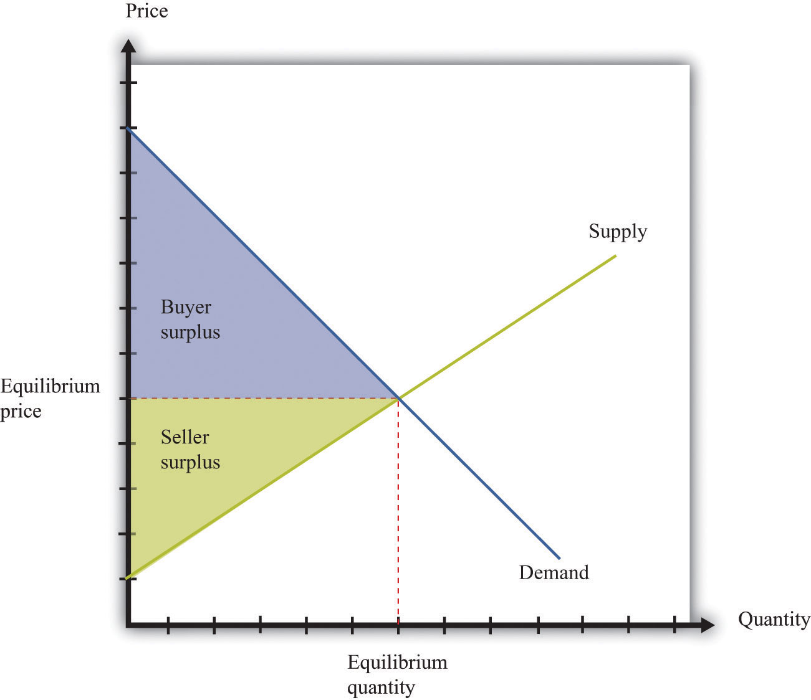
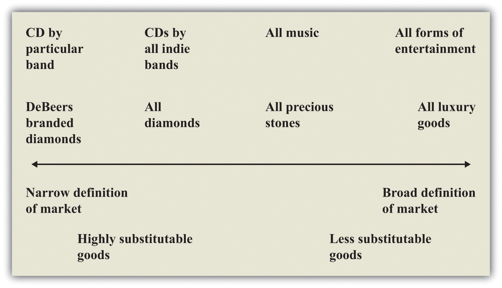
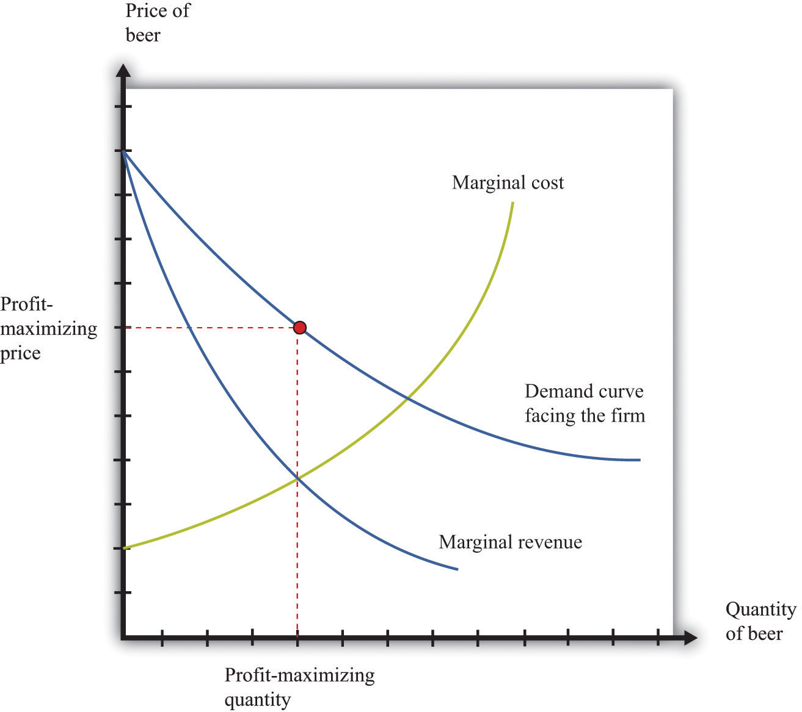
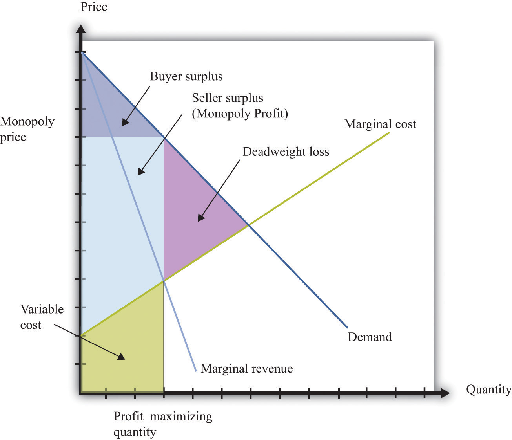

When there are many buyers and sellers of a homogeneous product, we have a competitive marketA market that satisfies two conditions: (1) there are many buyers and sellers, and (2) the goods the sellers produce are perfect substitutes. (Figure 15.1 "The Competitive Market Outcome"). Equilibrium is at the intersection of supply and demand. At the equilibrium level of output, households enjoy buyer surplusA measure of how much the buyer gains from a transaction, equal to the buyer’s valuation minus the price., given by the marked area below the demand curve and above the equilibrium price. The surplus arises from the fact that some buyers are willing to pay more than the equilibrium price for the good.
Figure 15.1 The Competitive Market Outcome
At the equilibrium quantity in a competitive market, all gains from trade are exhausted.
Surplus also flows to firms. Remember that a competitive firm’s individual supply curveHow much output a firm in a perfectly competitive market will supply at any given price. It is the same as a firm’s marginal cost curve. is equal to its marginal cost curve. In Figure 15.1 "The Competitive Market Outcome", the supply curve slopes upward because marginal cost is increasing. Firms obtain surplus because they can produce output at a marginal cost that is less than the equilibrium price of the good. This is shown as seller surplus in the figure.
At the equilibrium quantity, there are no further gains from trade. Producing more output would not increase the total surplus. In fact, producing more output would reduce the surplus: the marginal cost of producing more output would exceed the marginal valuation of extra output. Producing less output would likewise lower total surplus because the buyers and the sellers would lose some of their surplus.
The competitive market provides a benchmark because it leads to an efficient outcome. But very few markets are truly competitive. In most markets, firms possess some market power. This means, in particular, that they are able to set a price above marginal cost without losing all of their sales. In a competitive market, the demand curve facing a firm is perfectly elastic at the market price, whereas when a firm has market power, its demand curve slopes downward.
Toolkit: Section 31.10 "Buyer Surplus and Seller Surplus"
You can review the concepts of buyer surplus, seller surplus, and the gains from trade, in the toolkit.
At the other extreme to the competitive market is the case of monopolyA single supplier of a good or service in a market.. A monopoly arises when there is a single producer in a market. The demand curve facing a firm is, in this case, the same as the market demand curveThe number of units of a good or a service demanded at each price..
The definition of a monopoly seems easy, yet it is hard to decide exactly what we mean by “a market.” Think about diamonds. It is often said that the De Beers Corporation is a monopolist in the market for diamonds because this company controls most of the world’s diamond supply. Yet, depending on how broadly or narrowly we define the market, De Beers has either a lot of competitors or only a few. We could define the market very narrowly as “De Beers-branded diamonds” (De Beers is able to brand its diamonds by using certificates of authenticity). De Beers would then be a monopolist by definition. We could define the market more broadly as “all diamonds,” in which case De Beers has substantial market power but does not have a total monopoly. This is perhaps the most natural definition to use, yet it misses the fact that other precious stones, such as emeralds, rubies, or opals, are also possible substitutes for diamonds. An even broader market definition is “the market for precious stones.” We could go even further still and consider De Beers as part of the market for luxury goods, competing with, say, Louis Vuitton bags and Ferrari sports cars. We illustrate this in Figure 15.2 "The Extent of Competition Depends on the Definition of the Market".
Figure 15.2 The Extent of Competition Depends on the Definition of the Market
There is no hard-and-fast definition of a market, but goods that are highly substitutable for each other are generally taken to be in the same market.
Figure 15.2 "The Extent of Competition Depends on the Definition of the Market" also gives an illustration for the case of music. By definition, a given indie band has monopoly power over its own music. So again, with a very narrow definition of the market, we would say that the band is a monopolist for its own songs. But that band also competes with other indie bands for consumers’ dollars, so another definition of the market would be “CDs by all indie bands.” Again, we could define the market still more broadly as “all music” or even “all forms of entertainment.”
One of the difficult tasks of antitrust authorities is deciding what definition to use for a market. There is no single correct way to define a market, and the extent of market power depends on where we choose to draw the line. For this reason, the term monopoly is somewhat misleading. Almost all firms are monopolists if we adopt a sufficiently narrow definition of the market. The decision about how to set prices in the presence of market power, which is sometimes called the monopoly pricing problem, actually applies to nearly every firm in the economy. What matters in practice is determined by the extent of a firm’s market power.
The extent of a firm’s market power depends on two things: (1) the number of firms that potentially compete with it and (2) the extent to which those other companies produce close substitutes for a firm’s product. A strip mall at the edge of town might contain several different fast-food restaurants. Each restaurant enjoys some market power because the food it has available is slightly different from that at the other establishments. But many consumers are likely to be willing to substitute reasonably freely among the different restaurants, so the market power of each restaurant is limited. Contrast that with a fancy French restaurant with a famous chef. That restaurant enjoys much more market power because there are almost certainly fewer comparable restaurants nearby and the meals at other high-end restaurants are not such close substitutes.
Market power can stem from many different sources. A firm has market power if it is selling a unique product or service. A firm can also derive market power from its superior or exceptional service. If a firm creates customer loyalty, either through exceptional service or by loyalty programs (such as frequent flyer miles), this is also a source of market power. Retail firms can derive market power from their location: your local corner store has some market power because you would prefer to walk there rather than drive to a more distant supermarket.
Firms devote a lot of resources to establishing, protecting, and increasing their market power through advertising and other forms of marketing. Many firms spend a great deal of money on developing their brand image and brand awareness. Sporting goods companies such as Nike and Adidas are classic examples. When customers are loyal to brands, firms have market power.
The managers of a monopoly firm must pick the point on the demand curve that will maximize the firm’s profits—the total revenues of the firm minus its costs of producing its output. We can think about the firm choosing either its level of output or its price. If a firm chooses how much to produce, then the price of its product is determined from its demand curve. (Remember that the demand curve facing the firm and the market demand curve are the same thing for a monopolist.) If a firm chooses a price for its product, then the quantity produced is determined by the demand curve. For now, we tell the monopoly story assuming it chooses the quantity of output.
When a firm is maximizing its profit, producing a little more or a little less output will not increase the firm’s profit. This means that the extra revenue from producing one more unit of output is exactly equal to the cost of producing one more unit of output: marginal revenue equals marginal cost. We call this level of output the profit-maximizing quantity and illustrate it in Figure 15.3 "The Monopoly Outcome". The price the monopolist sets, termed the profit-maximizing price, can then be read from the demand curve. Once a monopolist determines how much to produce, the price of its output is determined by the maximum amount that consumers are willing to pay for the good.
Figure 15.3 The Monopoly Outcome
A monopolist produces a quantity such that marginal revenue equals marginal cost. The price is determined by the demand curve.
Toolkit: Section 31.15 "Pricing with Market Power"
The principles of pricing with market power are explained in more detail in the toolkit.
We have competition policies in market economies because market power often leads to an outcome that is not efficient. To understand this distortion, compare the monopoly outcome with the competitive market outcome we saw earlier. Figure 15.4 "Distortions Due to Market Power" is Figure 15.1 "The Competitive Market Outcome" with some areas of the figure labeled.
Toolkit: Section 31.1 "Individual Demand", Section 31.11 "Efficiency and Deadweight Loss" and Section 31.14 "Costs of Production"
You can review in the toolkit (1) the correspondence between demand and marginal valuation, (2) the meaning of efficiency and deadweight loss, and (3) the definitions of variable cost and marginal cost (and the relationship between them).
Figure 15.4 Distortions Due to Market Power
A monopolist produces a quantity that is less than socially optimal: there is a deadweight loss.
Comparing Figure 15.1 "The Competitive Market Outcome" with Figure 15.4 "Distortions Due to Market Power", we see that—relative to the competitive outcome—the monopolist charges a higher price and produces a lower quantity. Since the competitive outcome was efficient, the monopoly outcome is inefficient. Households in the economy would be better off if the monopolist produced at the competitive level of output and sold at the competitive price.
When a firm has market power, there is a distortion in the market: prices are too high, and output is too low. Antitrust laws are designed to address precisely this situation.
By virtue of the Sherman Antitrust Act of 1890, the US government can take legal action to break up a monopoly. In 1902, President Theodore Roosevelt used the Sherman Antitrust Act as a basis for trying to break up the monopolization of railway service in the United States. The resulting legal case, known as Northern Securities Co. v. United States, involved two key elements: restraint of trade and interstate commerce.
Multiple providers of rail service had joined together in the Northern Securities Company, resulting in a restraint of trade. The Supreme Court decisionCornell University Law School, Legal Information Institute, “Northern Securities Co. v. United States (No. 277),” accessed March 14, 2011, http://www.law.cornell.edu/supct/html/historics/USSC_CR_0193_0197_ZS.html. provides direct discussion of the anticompetitive nature of the creation of this company, noting that the company had been set up to eliminate competition among the different providers. Further, this restraint of trade had interstate implications because the railway lines themselves were not contained within any one state. This was a key point of jurisdiction: the Sherman Antitrust Act spoke directly about the effects of market power on interstate trade. Under the US Constitution, interstate commerce is part of the responsibility of the federal government.
Another famous antitrust case decided by the Supreme Court (http://supreme.justia.com/us/221/1/case.html) centered around the breakup of the Standard Oil Trust in 1911.Justia.com, US Supreme Court Center, “Standard Oil Co. of New Jersey v. United States, 221 U. S. 1 (1911),” accessed March 14, 2011, http://supreme.justia.com/us/221/1/case.html. John D. Rockefeller founded Standard Oil in 1870 soon after the discovery of oil in Ohio. By the late 1870s, the company controlled nearly 90 percent of the refineries in the United States. Shortly thereafter, the Standard Oil Trust was formed with the idea that the individual shareholders in a group of companies would come together to create a single company. This company would then jointly manage all the companies that joined the trust. In doing so, a monopoly was created. (This, by the way, is where the term antitrust comes from.)
Once again, the issue of jurisdiction played a role. Standard Oil was originally deemed a monopoly by the Ohio Supreme Court, which ordered it to be broken up. Instead, the company was simply reorganized as a New Jersey–based corporation. Because the company had moved to another state, the Ohio ruling became irrelevant, and the federal government had to step in to prevent unlawful interstate trade. The court ruled that the trust be dismantled. In the modern era, similar concerns arise across national borders: if two companies merge in Europe, for example, US antitrust authorities still take an interest, and vice versa.
These cases may seem like ancient history. Yet they remain very relevant today for at least two reasons. First, the legal system relies heavily on precedent, meaning that cases decided today depend on past rulings in similar cases. The actions of the Supreme Court in these two cases created a significant precedent for the present-day antitrust actions of the federal government. Second, antitrust actions continue to this day. A recent case again alleging a violation of the Sherman Antitrust Act was brought against Microsoft Corporation by the US government in 1998. Microsoft was charged with monopolizing the software market through its Windows operating system. As stated in the case, “Virtually all major PC manufacturers find it necessary to offer Microsoft operating systems on most of their PCs. Microsoft’s monopoly power allows it to induce these manufacturers to enter into anticompetitive, long-term licenses under which they must pay royalties to Microsoft not only when they sell PCs containing Microsoft’s operating systems, but also when they sell PCs containing non-Microsoft operating systems.”A full description of this aspect of the case is contained in John Kwoka and Lawrence White, eds., The Antitrust Revolution (New York: Oxford University Press, 2004).
One noteworthy element of the case concerned the definition of the market. After all, there are competing operating systems to Microsoft, most notably Apple Computer’s operating system. If the court viewed these products as substitutes for Microsoft’s operating system, then the claim that Microsoft was a monopolist would be less clear. Interestingly, the court ruled that Apple was not in the same market as Microsoft.
Because there are people willing to pay more than the marginal cost, it seems as if the monopolist in our earlier example is leaving some money on the table. Is there a way for the monopolist to make higher profits? The answer to this question hinges on an assumption that was implicit in our analysis: we suppose that the monopolist has to sell every unit of the good at the same price. In many cases, however, firms sell different units of their product at different prices. This is known as price discriminationWhen a firm sells different units of its product at different prices., and it can arise either because (1) a firm sells to different customers at different prices or because (2) a firm sells different units at different prices to the same customer. There are numerous examples of both kinds of price discrimination. An example of the first is discounts offered to senior citizens or students. An example of the second is quantity discounts such as “buy two, get one free.”
Firms have developed many creative forms of price discrimination, and we could easily fill a whole chapter with them. Our main focus here, however, is to understand how price discrimination operates in a monopoly market. Let us think about a case where the monopolist faces a unit demand curveThe special case of the individual demand curve when a buyer might purchase either zero units or one unit of a good but no more than one unit.: each buyer either purchases a unit of the good or does not buy the good at all. The downward-sloping demand curve comes from the fact that different individuals have different valuations of the good.
Toolkit: Section 31.1 "Individual Demand"
You can review unit demand in the toolkit.
Now imagine what the monopolist would do if she knew everyone’s individual valuations and was also able to charge a different price to different buyers. In this case, we obtain a remarkable result. If the monopolist could sell each unit at any price she wanted, then she would charge each individual his valuation of the good, with striking consequences.
Buyers obtain no surplus because each buyer surplus equals his valuation minus the price he pays—which we have just said is equal to his valuation. Each buyer is actually indifferent about buying or not buying the good. (If this seems odd, then you can imagine that the monopolist charges a price slightly below individuals’ valuations, so buyers obtain only a tiny amount of surplus. The conclusion is the same.) So where does their surplus go? It shows up as monopoly profits. By price discriminating, the monopolist captures all the gains from trade in this market. And where do these monopoly profits eventually go? They flow to the owners of the monopoly. The buyer surplus that is taken away by the price-discriminating monopolist is eventually returned to the household sector as dividends from the firm. However, it is not the same households who gain and lose surplus. Not everyone is a shareholder in the monopoly. Monopoly power causes a redistribution from the monopolists’ customers to its shareholders.
A situation like the one we have described, where a monopolist knows the valuations of all her customers, may seem a bit farfetched. Still, in situations where a monopolist negotiates individual prices with buyers, she will do her best to guess their valuations. For example, think of a used car dealer. When a prospective customer arrives on the lot, the dealer will typically engage the customer in conversation in an attempt to learn where he lives, what kind of job he has, and so on. Such information helps the dealer guess the buyer’s valuation.
There are many kinds of price discrimination.
From the perspective of a firm, the biggest danger of price discrimination is the possibility of arbitrageThe act of buying and then selling an asset to make a profit.. If you are selling your product more cheaply to some than to others, you don’t want someone to buy at the cheap price and then resell to your higher-value customers. This is a particular issue for pharmaceutical companies that charge different prices in different countries. If you need proof of this, look at the spam in your e-mail. The chances are very good that you have recently received an e-mail offering you pharmaceuticals at Canadian prices.
The Robinson-Patman Act of 1936 directly forbids certain forms of price discrimination. The following is from the act, with our emphasis added: “It shall be unlawful for any person engaged in commerce…to discriminate in price between different purchasers of commodities of like grade and quality, where either or any of the purchases involved in such discrimination are in commerce…and where the effect of such discrimination may be substantially to lessen competition or tend to create a monopoly in any line of commerce.”Cornell University Law School, Legal Information Institute, “§ 13. Discrimination in price, services, or facilities,” accessed March 14, 2011, http://www.law.cornell.edu/uscode/15/13.html.
The type of price discrimination we have discussed certainly involves discrimination among different purchasers. What is less clear is whether such actions would “lessen competition or tend to create a monopoly.” In our earlier example, price discrimination actually makes the market more efficient, and in general, price discrimination can increase or decrease efficiency. There are no simple guidelines, and each case must be examined on an individual basis.
Price discrimination also occurs in business-to-businessA market where firms sell goods and services to other firms. transactions between firms. In a recent price-discrimination case involving Volvo, a car dealer charged that other dealers had obtained deeper discounts (price concessions) that permitted them to be more competitive.See Cornell University Law School, Legal Information Institute, “Volvo Trucks North America, Inc. v. Reeder-Simco GMC, Inc. (04-905) 546 U.S. 164 (2006) 374 F.3d 701, reversed and remanded,” accessed March 14, 2011, http://www.law.cornell.edu/supct/html/04-905.ZS.html. This seems to fit the requirements of the Robinson-Patman Act because Volvo trucks are a homogeneous good (Volvo trucks in this case), and the practice allows one dealer to undercut another.
A jury trial led to an award of $4.1 million to the injured company. Not surprisingly, Volvo appealed the decision, partly because, so it claimed, the other dealers were not in direct competition with the dealer filing the suit. Once again, you can see the critical significance of defining the market. The Supreme Court eventually decided the case in January 2006 in favor of Volvo.